Project
Mobile Plant Store MVP
UX/UI DESIGN · CASE STUDY
From uncertainty to a confident choice
A mobile plant-shopping concept that explores how a complex catalog can become a clearer, more supportive decision-making experience.
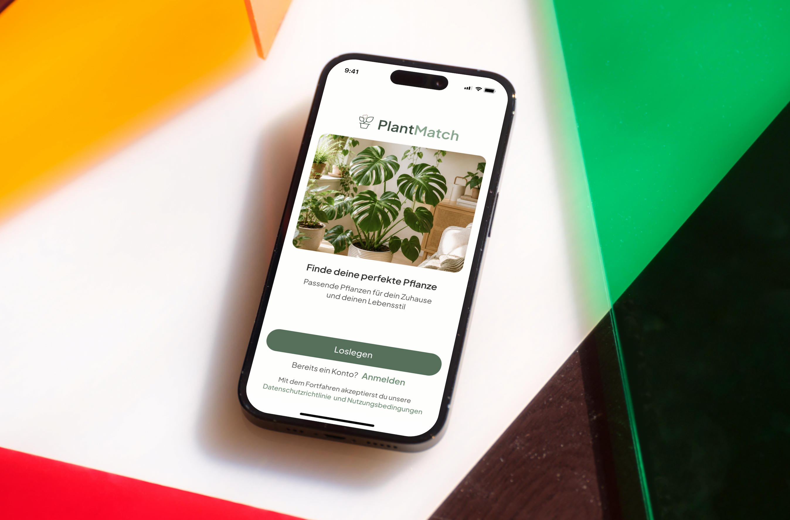
PlantMatch is an MVP concept for a mobile plant store. The project started with a broad question: how can people choose plants and care products when they are unsure what actually fits their home, experience and everyday life?
Mobile Plant Store MVP
UX/UI Designer
Discovery · Selection · Checkout
Figma
Buying a plant is not only a visual choice. Users may need to consider light, care effort, available space, pets and the products required after purchase. For beginners, this creates uncertainty before they even reach checkout.
A large catalog makes it difficult to know where to start.
Users may not know which plant suits their conditions or experience.
Choosing the plant, pot, soil and care products often happens separately.
The real UX problem was not “How do I show more plants?” but “How do I help someone make the right choice with less uncertainty?”
Based on the project brief and target-audience assumptions, I defined two proto-personas to keep different decision barriers visible throughout the design process. They are design hypotheses, not interview-based personas.
“I like plants, but I’m afraid I’ll choose something too difficult to care for.”
Simple recommendations, clear care level, fast comparison.
Too many options, little experience and fear of choosing incorrectly.
“I need something that works in my apartment and is safe for my dog.”
Pet-safe choices, practical filters and relevant accessories.
Scattered information and time-consuming product research.
I reviewed three existing products from different parts of the plant journey: Planta, PlantIn and Bloom & Wild. The goal was to understand how they support plant care, identification, product discovery and shopping — and where users are still left to make difficult decisions on their own.
Planta offers personalized onboarding, fast plant identification and well-structured plant information. Its main limitations are mandatory registration and basic filtering that does not adequately cover care conditions.
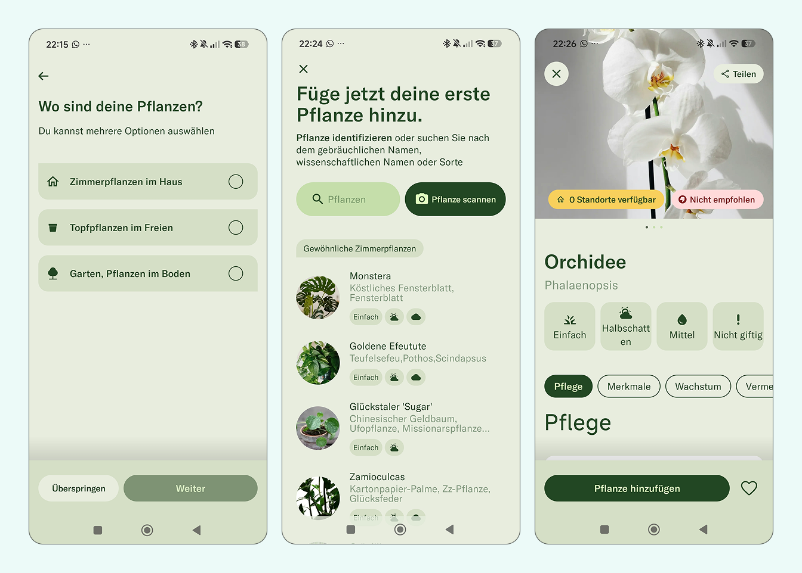
PlantIn offers an appealing interface, quick access to plant scanning and clearly structured care information. However, its onboarding is lengthy, and it provides limited support for choosing plants based on individual living conditions.
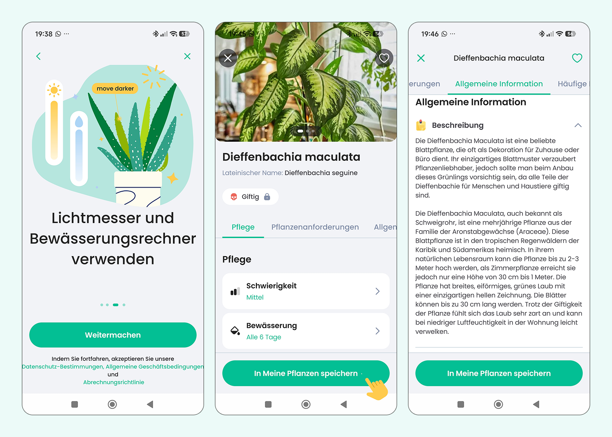
Bloom & Wild offers an attractive shopping experience, a clear catalog, useful filtering and sorting, and a straightforward purchase process. However, it does not personalize product selection or help users assess which option best suits their needs.
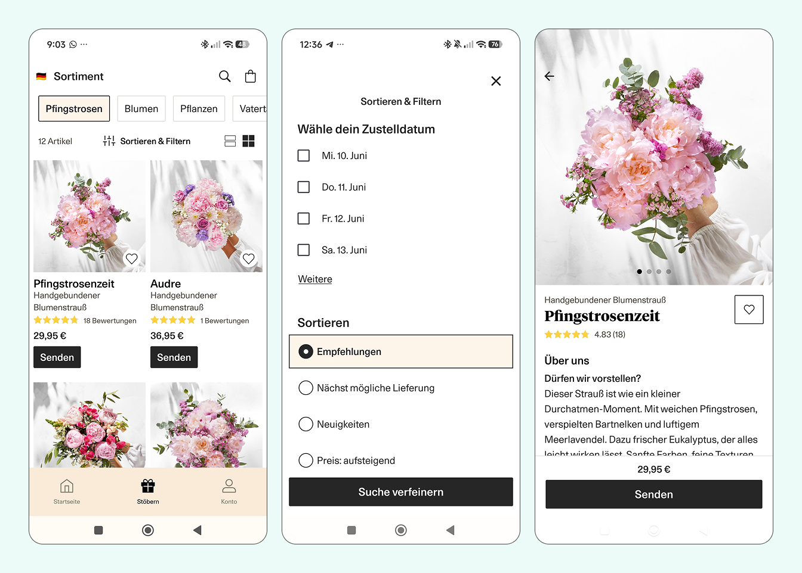
The analysis highlighted different strengths and limitations across the three products. Planta and PlantIn focus on plant identification and care, while Bloom & Wild offers a strong shopping experience. In this comparison, none fully connects personalized plant selection, care guidance and shopping. This suggested an opportunity for PlantMatch: help users choose plants that suit their individual conditions and connect that choice with relevant care products and accessories.
The competitor analysis shifted the focus from organizing the catalog to supporting the user's decision.
Instead of expecting users to understand plant requirements first, PlantMatch could begin with their home, experience and habits, then translate those conditions into relevant plant recommendations.
PlantMatch turns uncertainty into a guided selection process. A short quiz creates personalized recommendations, while the catalog remains available for users who prefer to explore independently.
Questions about light, experience, available time and pets help narrow the choice.
Personalized recommendations, match scores and filters help users focus on plants that fit their conditions.
Users can identify plants from a photo when searching and preview a selected plant in their own space.
Matching pots, soil and care products extend the experience beyond choosing the plant itself.
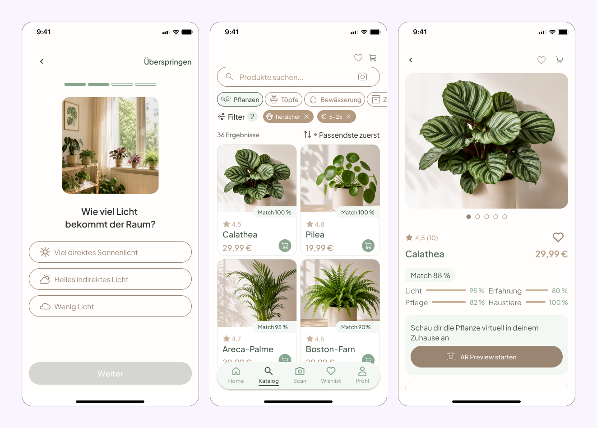
I mapped the main journey from onboarding to purchase, including optional personalization, photo search and authentication only when it is needed to complete an order.
Start with guidance or explore independently.
Find a plant and understand why it fits.
Sign in only when it becomes necessary to complete the order.
Before defining the visual style, I used wireframes to translate the user flow into screen structure, navigation and key interactions.
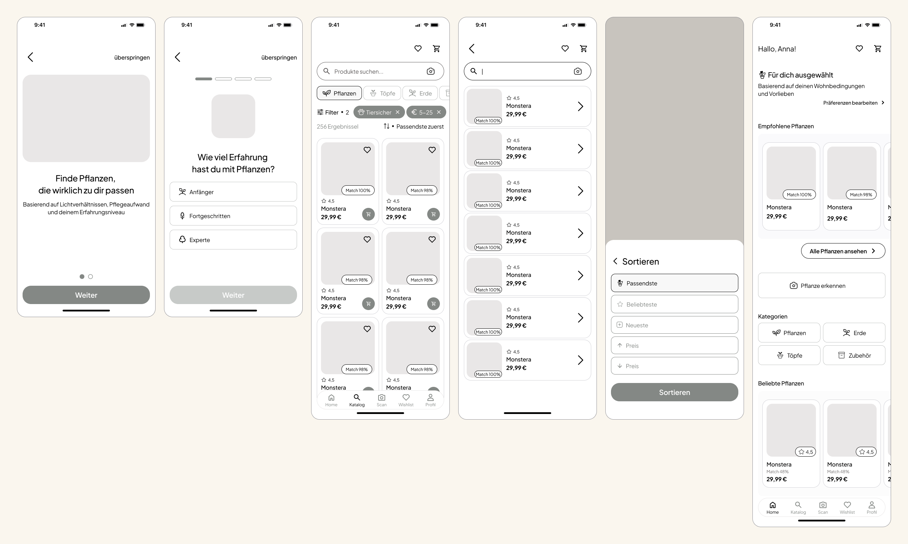
The wireframes helped me validate the structure before adding visual detail, while keeping both personalized recommendations and independent catalog exploration accessible.
The visual system combines soft greens with warm neutral tones to create a calm, natural atmosphere that supports the plant-focused experience.
I created reusable styles and components to keep the interface consistent across the main user journey. The examples below show a selection of the system used across the core shopping experience.
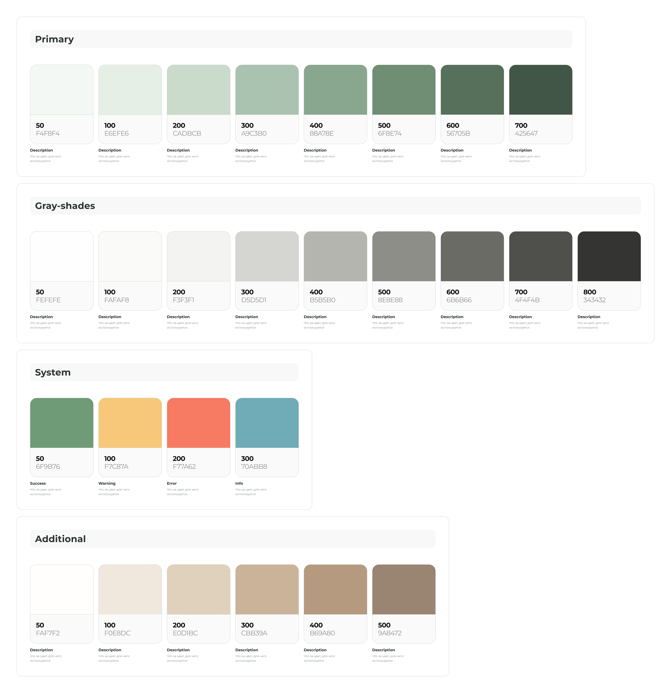
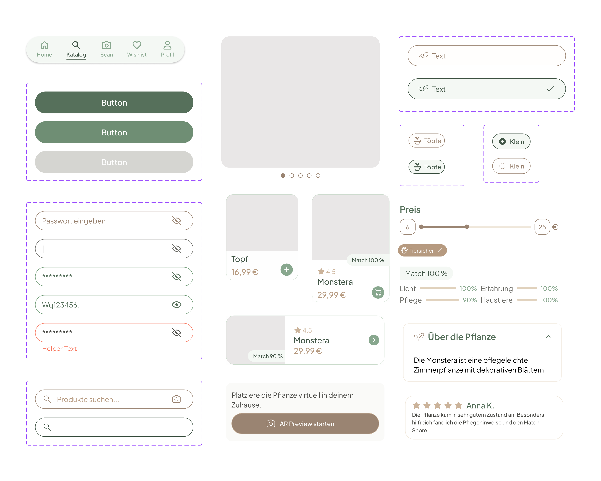
Instead of opening with a large catalog, PlantMatch first learns about the user's conditions and preferences to narrow the choice to more relevant plants.
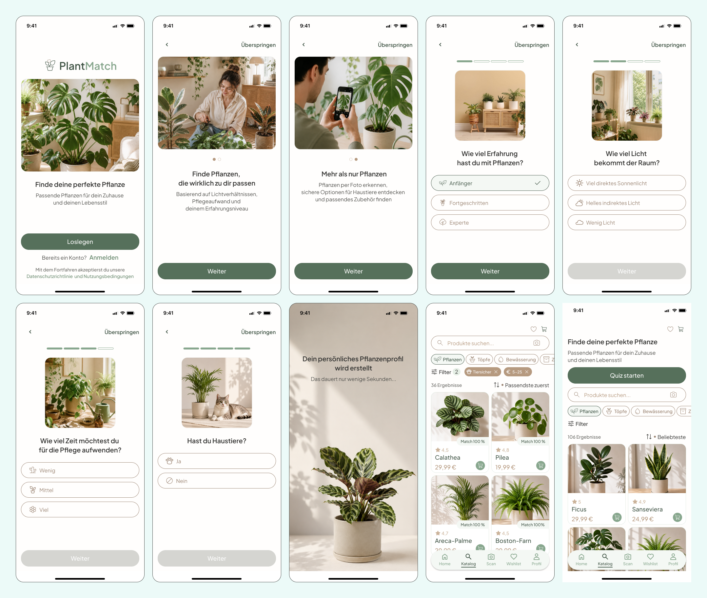
A match score gives users a quick recommendation, while criteria such as light, care, experience and pet safety explain why a plant fits their conditions.
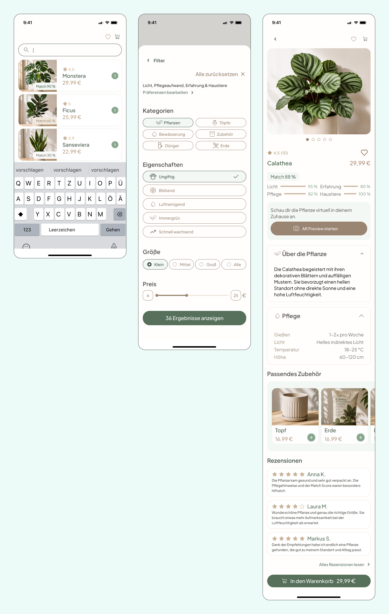
Related pots, soil and care products turn plant selection into a more complete solution without requiring separate research.
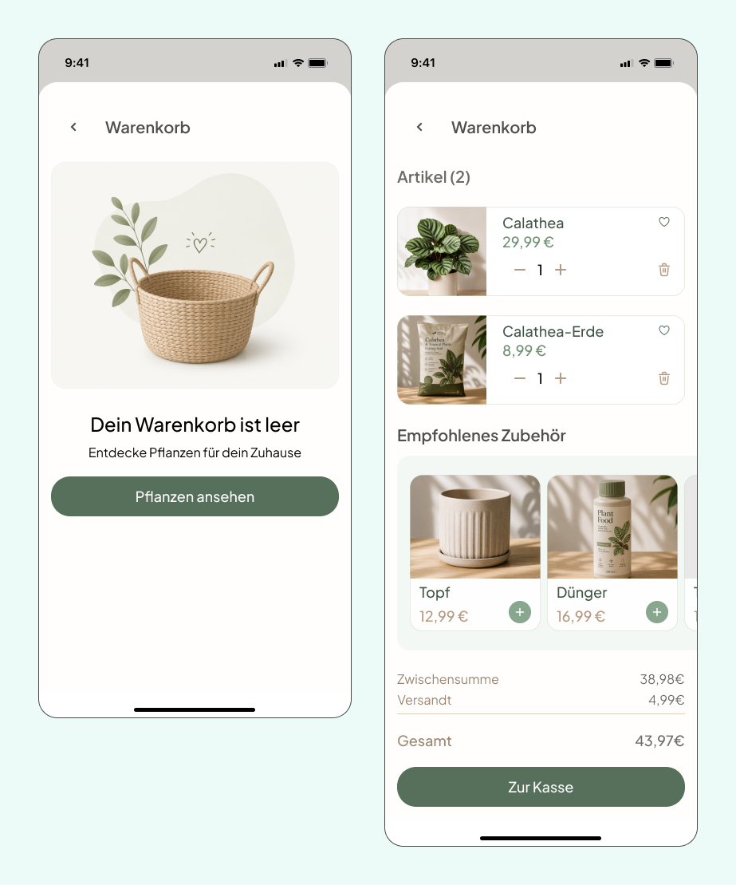
Users can explore, complete the quiz and build their cart without creating an account. Login is introduced only at checkout, when it becomes necessary to complete the order.
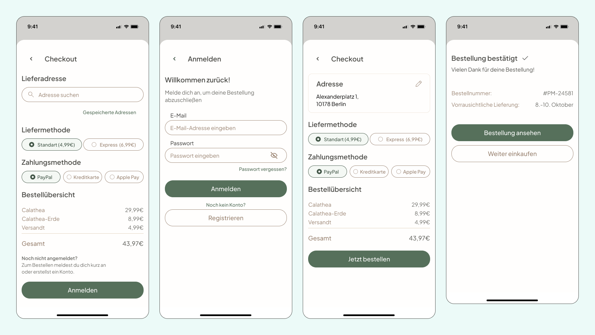
FINAL EXPERIENCE
PlantMatch evolved from a conventional mobile plant store into a guided shopping experience. Personalization, transparent recommendations and a connected purchase flow work together to reduce uncertainty from discovery to checkout.
Recommendations adapt to the user's home, experience and lifestyle.
Match scores explain not only what fits, but why.
Plant selection, accessories and checkout form one continuous experience.
A larger catalog does not necessarily create a better shopping experience. Helping users narrow the choice can be more valuable than offering more options.
Personalization is most useful when it reduces a real decision burden rather than simply adding recommendations.
Good recommendations should explain why an option fits, giving users more confidence in their decision.
Authentication should support the task instead of becoming an unnecessary barrier at the beginning of the journey.
Next Project
ArtCourse ↗